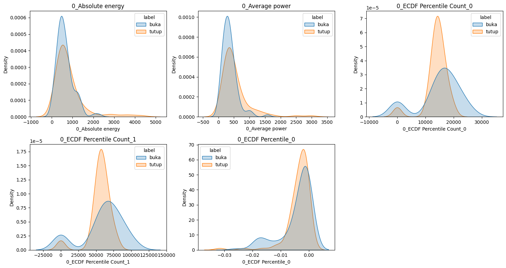
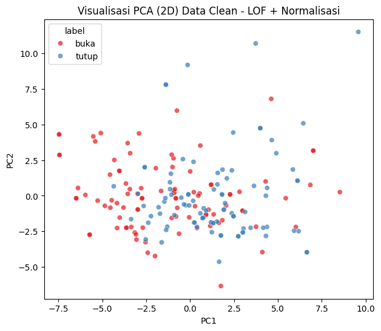

TimeSeries Ekstraksi Fitur Audio#
Dataset menggunakan data voice 100 buka dan 100 tutup dengan format .wav yang di rekam sendiri
pip install tsfel librosa pandas scikit-learn
Requirement already satisfied: tsfel in /usr/local/python/3.12.1/lib/python3.12/site-packages (0.2.0)
Requirement already satisfied: librosa in /usr/local/python/3.12.1/lib/python3.12/site-packages (0.11.0)
Requirement already satisfied: pandas in /home/codespace/.local/lib/python3.12/site-packages (2.3.1)
Requirement already satisfied: scikit-learn in /home/codespace/.local/lib/python3.12/site-packages (1.7.0)
Requirement already satisfied: ipython>=7.4.0 in /home/codespace/.local/lib/python3.12/site-packages (from tsfel) (9.4.0)
Requirement already satisfied: numpy>=1.18.5 in /home/codespace/.local/lib/python3.12/site-packages (from tsfel) (2.3.1)
Requirement already satisfied: PyWavelets>=1.4.1 in /usr/local/python/3.12.1/lib/python3.12/site-packages (from tsfel) (1.9.0)
Requirement already satisfied: requests>=2.31.0 in /home/codespace/.local/lib/python3.12/site-packages (from tsfel) (2.32.4)
Requirement already satisfied: scipy>=1.7.3 in /home/codespace/.local/lib/python3.12/site-packages (from tsfel) (1.16.0)
Requirement already satisfied: setuptools>=47.1.1 in /home/codespace/.local/lib/python3.12/site-packages (from tsfel) (80.9.0)
Requirement already satisfied: statsmodels>=0.12.0 in /usr/local/python/3.12.1/lib/python3.12/site-packages (from tsfel) (0.14.5)
Requirement already satisfied: audioread>=2.1.9 in /usr/local/python/3.12.1/lib/python3.12/site-packages (from librosa) (3.1.0)
Requirement already satisfied: numba>=0.51.0 in /usr/local/python/3.12.1/lib/python3.12/site-packages (from librosa) (0.62.1)
Requirement already satisfied: joblib>=1.0 in /home/codespace/.local/lib/python3.12/site-packages (from librosa) (1.5.1)
Requirement already satisfied: decorator>=4.3.0 in /home/codespace/.local/lib/python3.12/site-packages (from librosa) (5.2.1)
Requirement already satisfied: soundfile>=0.12.1 in /usr/local/python/3.12.1/lib/python3.12/site-packages (from librosa) (0.13.1)
Requirement already satisfied: pooch>=1.1 in /usr/local/python/3.12.1/lib/python3.12/site-packages (from librosa) (1.8.2)
Requirement already satisfied: soxr>=0.3.2 in /usr/local/python/3.12.1/lib/python3.12/site-packages (from librosa) (1.0.0)
Requirement already satisfied: typing_extensions>=4.1.1 in /home/codespace/.local/lib/python3.12/site-packages (from librosa) (4.14.1)
Requirement already satisfied: lazy_loader>=0.1 in /usr/local/python/3.12.1/lib/python3.12/site-packages (from librosa) (0.4)
Requirement already satisfied: msgpack>=1.0 in /usr/local/python/3.12.1/lib/python3.12/site-packages (from librosa) (1.1.2)
Requirement already satisfied: python-dateutil>=2.8.2 in /home/codespace/.local/lib/python3.12/site-packages (from pandas) (2.9.0.post0)
Requirement already satisfied: pytz>=2020.1 in /home/codespace/.local/lib/python3.12/site-packages (from pandas) (2025.2)
Requirement already satisfied: tzdata>=2022.7 in /home/codespace/.local/lib/python3.12/site-packages (from pandas) (2025.2)
Requirement already satisfied: threadpoolctl>=3.1.0 in /home/codespace/.local/lib/python3.12/site-packages (from scikit-learn) (3.6.0)
Requirement already satisfied: ipython-pygments-lexers in /home/codespace/.local/lib/python3.12/site-packages (from ipython>=7.4.0->tsfel) (1.1.1)
Requirement already satisfied: jedi>=0.16 in /home/codespace/.local/lib/python3.12/site-packages (from ipython>=7.4.0->tsfel) (0.19.2)
Requirement already satisfied: matplotlib-inline in /home/codespace/.local/lib/python3.12/site-packages (from ipython>=7.4.0->tsfel) (0.1.7)
Requirement already satisfied: pexpect>4.3 in /home/codespace/.local/lib/python3.12/site-packages (from ipython>=7.4.0->tsfel) (4.9.0)
Requirement already satisfied: prompt_toolkit<3.1.0,>=3.0.41 in /home/codespace/.local/lib/python3.12/site-packages (from ipython>=7.4.0->tsfel) (3.0.51)
Requirement already satisfied: pygments>=2.4.0 in /home/codespace/.local/lib/python3.12/site-packages (from ipython>=7.4.0->tsfel) (2.19.2)
Requirement already satisfied: stack_data in /home/codespace/.local/lib/python3.12/site-packages (from ipython>=7.4.0->tsfel) (0.6.3)
Requirement already satisfied: traitlets>=5.13.0 in /home/codespace/.local/lib/python3.12/site-packages (from ipython>=7.4.0->tsfel) (5.14.3)
Requirement already satisfied: wcwidth in /home/codespace/.local/lib/python3.12/site-packages (from prompt_toolkit<3.1.0,>=3.0.41->ipython>=7.4.0->tsfel) (0.2.13)
Requirement already satisfied: parso<0.9.0,>=0.8.4 in /home/codespace/.local/lib/python3.12/site-packages (from jedi>=0.16->ipython>=7.4.0->tsfel) (0.8.4)
Requirement already satisfied: packaging in /home/codespace/.local/lib/python3.12/site-packages (from lazy_loader>=0.1->librosa) (25.0)
Requirement already satisfied: llvmlite<0.46,>=0.45.0dev0 in /usr/local/python/3.12.1/lib/python3.12/site-packages (from numba>=0.51.0->librosa) (0.45.1)
Requirement already satisfied: ptyprocess>=0.5 in /home/codespace/.local/lib/python3.12/site-packages (from pexpect>4.3->ipython>=7.4.0->tsfel) (0.7.0)
Requirement already satisfied: platformdirs>=2.5.0 in /home/codespace/.local/lib/python3.12/site-packages (from pooch>=1.1->librosa) (4.3.8)
Requirement already satisfied: six>=1.5 in /home/codespace/.local/lib/python3.12/site-packages (from python-dateutil>=2.8.2->pandas) (1.17.0)
Requirement already satisfied: charset_normalizer<4,>=2 in /home/codespace/.local/lib/python3.12/site-packages (from requests>=2.31.0->tsfel) (3.4.2)
Requirement already satisfied: idna<4,>=2.5 in /home/codespace/.local/lib/python3.12/site-packages (from requests>=2.31.0->tsfel) (3.10)
Requirement already satisfied: urllib3<3,>=1.21.1 in /home/codespace/.local/lib/python3.12/site-packages (from requests>=2.31.0->tsfel) (2.5.0)
Requirement already satisfied: certifi>=2017.4.17 in /home/codespace/.local/lib/python3.12/site-packages (from requests>=2.31.0->tsfel) (2025.7.9)
Requirement already satisfied: cffi>=1.0 in /home/codespace/.local/lib/python3.12/site-packages (from soundfile>=0.12.1->librosa) (1.17.1)
Requirement already satisfied: pycparser in /home/codespace/.local/lib/python3.12/site-packages (from cffi>=1.0->soundfile>=0.12.1->librosa) (2.22)
Requirement already satisfied: patsy>=0.5.6 in /usr/local/python/3.12.1/lib/python3.12/site-packages (from statsmodels>=0.12.0->tsfel) (1.0.2)
Requirement already satisfied: executing>=1.2.0 in /home/codespace/.local/lib/python3.12/site-packages (from stack_data->ipython>=7.4.0->tsfel) (2.2.0)
Requirement already satisfied: asttokens>=2.1.0 in /home/codespace/.local/lib/python3.12/site-packages (from stack_data->ipython>=7.4.0->tsfel) (3.0.0)
Requirement already satisfied: pure-eval in /home/codespace/.local/lib/python3.12/site-packages (from stack_data->ipython>=7.4.0->tsfel) (0.2.3)
[notice] A new release of pip is available: 25.1.1 -> 25.3
[notice] To update, run: python3 -m pip install --upgrade pip
Note: you may need to restart the kernel to use updated packages.
import tsfel
import librosa
import numpy as np
import pandas as pd
import os
import os
# Langsung akses folder di dalam direktori saat ini
path_buka = 'buka_wav'
path_tutup = 'tutup_wav'
# Cek apakah folder terbaca
print("Isi folder buka_wav:", os.listdir(path_buka)[:5])
print("Isi folder tutup_wav:", os.listdir(path_tutup)[:5])
Isi folder buka_wav: ['buka (32).wav', 'buka (14).wav', 'buka (92).wav', 'buka (71).wav', 'buka (42).wav']
Isi folder tutup_wav: ['tutup (67).wav', 'tutup (62).wav', 'tutup (92).wav', 'tutup (25).wav', 'tutup (87).wav']
Ekstraksi fitur domain statistical#
# Ambil konfigurasi fitur domain "statistical"
cfg = tsfel.get_features_by_domain('statistical')
def extract_tsfel_features():
features = []
labels = []
# Loop untuk dua kelas
for label in ['buka_wav', 'tutup_wav']:
folder_path = label # karena folder ada di direktori yang sama
print(f"🔍 Memproses folder: {label} ...")
for file in os.listdir(folder_path):
if file.endswith('.wav'):
file_path = os.path.join(folder_path, file)
try:
# Load file audio
y, sr = librosa.load(file_path, sr=None)
# Ekstraksi fitur TSFEL
df_feat = tsfel.time_series_features_extractor(cfg, y, fs=sr, verbose=0)
# Ambil rata-rata setiap kolom fitur (supaya 1 baris per file)
feat_mean = df_feat.mean().values
features.append(feat_mean)
labels.append(label.replace('_wav', '')) # hilangkan _wav
except Exception as e:
print(f"⚠️ Gagal memproses {file_path}: {e}")
# Gabungkan hasil ke DataFrame
X = pd.DataFrame(features, columns=df_feat.columns)
y = pd.Series(labels, name='label')
return X, y
# Jalankan fungsi
X, y = extract_tsfel_features()
print("Jumlah data:", len(X))
print("Jumlah fitur:", X.shape[1])
print("Label unik:", y.unique())
X.head()
🔍 Memproses folder: buka_wav ...
🔍 Memproses folder: tutup_wav ...
Jumlah data: 200
Jumlah fitur: 31
Label unik: ['buka' 'tutup']
| 0_Absolute energy | 0_Average power | 0_ECDF Percentile Count_0 | 0_ECDF Percentile Count_1 | 0_ECDF Percentile_0 | 0_ECDF Percentile_1 | 0_ECDF_0 | 0_ECDF_1 | 0_ECDF_2 | 0_ECDF_3 | ... | 0_Mean | 0_Mean absolute deviation | 0_Median | 0_Median absolute deviation | 0_Min | 0_Peak to peak distance | 0_Root mean square | 0_Skewness | 0_Standard deviation | 0_Variance | |
|---|---|---|---|---|---|---|---|---|---|---|---|---|---|---|---|---|---|---|---|---|---|
| 0 | 466.560301 | 192.477026 | 23270.0 | 93081.0 | -0.000275 | 0.000275 | 0.000009 | 0.000017 | 0.000026 | 0.000034 | ... | 0.000011 | 0.023953 | 0.0 | 0.000153 | -0.551025 | 1.119568 | 0.063324 | 0.137023 | 0.063324 | 0.004010 |
| 1 | 579.632037 | 335.439251 | 16588.0 | 66355.0 | -0.003571 | 0.003326 | 0.000012 | 0.000024 | 0.000036 | 0.000048 | ... | -0.000030 | 0.035708 | 0.0 | 0.001617 | -0.712250 | 1.363739 | 0.083596 | 0.006383 | 0.083596 | 0.006988 |
| 2 | 577.444659 | 381.913106 | 0.0 | 0.0 | 0.000000 | 0.000000 | 0.000014 | 0.000028 | 0.000041 | 0.000055 | ... | -0.000004 | 0.039157 | 0.0 | 0.008453 | -0.933563 | 1.739197 | 0.089199 | -0.178687 | 0.089199 | 0.007956 |
| 3 | 354.869821 | 205.366955 | 16588.0 | 66355.0 | -0.006287 | 0.006348 | 0.000012 | 0.000024 | 0.000036 | 0.000048 | ... | -0.000008 | 0.027675 | 0.0 | 0.003723 | -0.518646 | 0.976196 | 0.065410 | -0.286593 | 0.065410 | 0.004278 |
| 4 | 871.198669 | 684.915832 | 12211.0 | 48844.0 | -0.019623 | 0.019043 | 0.000016 | 0.000033 | 0.000049 | 0.000066 | ... | -0.000006 | 0.057693 | 0.0 | 0.011322 | -0.760010 | 1.435883 | 0.119452 | -0.049095 | 0.119452 | 0.014269 |
5 rows × 31 columns
X['label'] = y
X.to_csv("fitur_tsfel_statistical.csv", index=False)
print("✅ Fitur berhasil disimpan di folder 'tugas' (tempat notebook ini berada)")
✅ Fitur berhasil disimpan di folder 'tugas' (tempat notebook ini berada)
Prepocessing Data#
# Load dataset
df = pd.read_csv("fitur_tsfel_statistical.csv")
print("✅ Data berhasil dimuat!")
print("Ukuran data:", df.shape)
df.head()
✅ Data berhasil dimuat!
Ukuran data: (200, 32)
| 0_Absolute energy | 0_Average power | 0_ECDF Percentile Count_0 | 0_ECDF Percentile Count_1 | 0_ECDF Percentile_0 | 0_ECDF Percentile_1 | 0_ECDF_0 | 0_ECDF_1 | 0_ECDF_2 | 0_ECDF_3 | ... | 0_Mean absolute deviation | 0_Median | 0_Median absolute deviation | 0_Min | 0_Peak to peak distance | 0_Root mean square | 0_Skewness | 0_Standard deviation | 0_Variance | label | |
|---|---|---|---|---|---|---|---|---|---|---|---|---|---|---|---|---|---|---|---|---|---|
| 0 | 466.560301 | 192.477026 | 23270.0 | 93081.0 | -0.000275 | 0.000275 | 0.000009 | 0.000017 | 0.000026 | 0.000034 | ... | 0.023953 | 0.0 | 0.000153 | -0.551025 | 1.119568 | 0.063324 | 0.137023 | 0.063324 | 0.004010 | buka |
| 1 | 579.632037 | 335.439251 | 16588.0 | 66355.0 | -0.003571 | 0.003326 | 0.000012 | 0.000024 | 0.000036 | 0.000048 | ... | 0.035708 | 0.0 | 0.001617 | -0.712250 | 1.363739 | 0.083596 | 0.006383 | 0.083596 | 0.006988 | buka |
| 2 | 577.444659 | 381.913106 | 0.0 | 0.0 | 0.000000 | 0.000000 | 0.000014 | 0.000028 | 0.000041 | 0.000055 | ... | 0.039157 | 0.0 | 0.008453 | -0.933563 | 1.739197 | 0.089199 | -0.178687 | 0.089199 | 0.007956 | buka |
| 3 | 354.869821 | 205.366955 | 16588.0 | 66355.0 | -0.006287 | 0.006348 | 0.000012 | 0.000024 | 0.000036 | 0.000048 | ... | 0.027675 | 0.0 | 0.003723 | -0.518646 | 0.976196 | 0.065410 | -0.286593 | 0.065410 | 0.004278 | buka |
| 4 | 871.198669 | 684.915832 | 12211.0 | 48844.0 | -0.019623 | 0.019043 | 0.000016 | 0.000033 | 0.000049 | 0.000066 | ... | 0.057693 | 0.0 | 0.011322 | -0.760010 | 1.435883 | 0.119452 | -0.049095 | 0.119452 | 0.014269 | buka |
5 rows × 32 columns
# Pisahkan fitur dan label
X = df.drop('label', axis=1)
y = df['label']
print("Jumlah data:", len(X))
print("Jumlah fitur:", X.shape[1])
print("Label unik:", y.unique())
print(y.value_counts())
Jumlah data: 200
Jumlah fitur: 31
Label unik: ['buka' 'tutup']
label
buka 100
tutup 100
Name: count, dtype: int64
Cek Missing Value#
# cek missing value
print("Jumlah missing value:", X.isna().sum().sum())
# Jika ada NaN atau inf, ganti dengan 0
X = X.replace([np.inf, -np.inf], np.nan)
X = X.fillna(0)
Jumlah missing value: 0
Deteksi Outlier dengan LoF#
from sklearn.neighbors import LocalOutlierFactor
# Inisialisasi LOF
lof = LocalOutlierFactor(n_neighbors=20, contamination=0.05)
# Fit dan prediksi (-1 = outlier, 1 = normal)
y_pred_outlier = lof.fit_predict(X)
# Ambil data yang normal saja
mask_normal = y_pred_outlier == 1
X_lof = X[mask_normal]
y_lof = y[mask_normal]
print(f"Jumlah data awal: {len(X)}")
print(f"Jumlah data setelah buang outlier (LOF): {len(X_lof)}")
print(f"Outlier terdeteksi: {np.sum(y_pred_outlier == -1)} baris")
Jumlah data awal: 200
Jumlah data setelah buang outlier (LOF): 190
Outlier terdeteksi: 10 baris
Normalisasi#
from sklearn.preprocessing import StandardScaler
import joblib
scaler = StandardScaler()
X_scaled = scaler.fit_transform(X_lof)
# Simpan scaler di folder tugas (tempat notebook ini berada)
joblib.dump(scaler, 'scaler_tsfel.pkl')
print("✅ Scaler disimpan")
✅ Scaler disimpan
# Gabungkan kembali jadi DataFrame agar mudah dipakai nanti
X_clean = pd.DataFrame(X_scaled, columns=X_lof.columns)
X_clean['label'] = y_lof.values
Visualisasi Data#
import matplotlib.pyplot as plt
plt.figure(figsize=(5,4))
y_lof.value_counts().plot(kind='bar', color=['skyblue', 'salmon'])
plt.title('Distribusi Label Setelah LOF Cleaning')
plt.xlabel('Label')
plt.ylabel('Jumlah Sampel')
plt.xticks(rotation=0)
plt.show()

import seaborn as sns
import pandas as pd
# Buat dataframe gabungan
df_clean = X_lof.copy()
df_clean['label'] = y_lof.values
# Pilih 5 fitur acak untuk ditampilkan
sample_features = df_clean.columns[:5]
plt.figure(figsize=(15,8))
for i, col in enumerate(sample_features, 1):
plt.subplot(2, 3, i)
sns.kdeplot(data=df_clean, x=col, hue='label', fill=True)
plt.title(col)
plt.tight_layout()
plt.show()

from sklearn.decomposition import PCA
# Reduksi dimensi ke 2 komponen utama
pca = PCA(n_components=2)
X_pca = pca.fit_transform(X_scaled)
# Buat dataframe untuk visualisasi
df_pca = pd.DataFrame(X_pca, columns=['PC1', 'PC2'])
df_pca['label'] = y_lof.values
# Plot hasil PCA
plt.figure(figsize=(7,6))
sns.scatterplot(data=df_pca, x='PC1', y='PC2', hue='label', palette='Set1', alpha=0.7)
plt.title('Visualisasi PCA (2D) Data Clean - LOF + Normalisasi')
plt.show()

Modelling menggunakan RandomForest#
from sklearn.model_selection import train_test_split
X_train, X_test, y_train, y_test = train_test_split(
X_scaled, y_lof, test_size=0.2, random_state=42, stratify=y_lof
)
print("Jumlah data training:", len(X_train))
print("Jumlah data testing:", len(X_test))
Jumlah data training: 152
Jumlah data testing: 38
from sklearn.ensemble import RandomForestClassifier
from sklearn.metrics import accuracy_score, classification_report, confusion_matrix
import seaborn as sns
import matplotlib.pyplot as plt
# Inisialisasi dan latih model
rf = RandomForestClassifier(n_estimators=200, random_state=42)
rf.fit(X_train, y_train)
# Prediksi
y_pred_rf = rf.predict(X_test)
# Evaluasi
print("=== Random Forest ===")
print("Akurasi:", accuracy_score(y_test, y_pred_rf))
print(classification_report(y_test, y_pred_rf))
# Confusion Matrix
plt.figure(figsize=(5,4))
sns.heatmap(confusion_matrix(y_test, y_pred_rf), annot=True, fmt='d', cmap='Blues')
plt.title('Confusion Matrix - Random Forest')
plt.xlabel('Predicted')
plt.ylabel('Actual')
plt.show()
=== Random Forest ===
Akurasi: 0.8947368421052632
precision recall f1-score support
buka 0.86 0.95 0.90 19
tutup 0.94 0.84 0.89 19
accuracy 0.89 38
macro avg 0.90 0.89 0.89 38
weighted avg 0.90 0.89 0.89 38
# Simpan
joblib.dump(rf, 'model_randomforest_tsfel.pkl')
print("✅ Model RandomForest disimpan ke Drive!")
✅ Model RandomForest disimpan ke Drive!
Link file csv dam Streamlit#
file csv: https://drive.google.com/file/d/14nemABXyokGlunYf5LYLq5DoUBAc6V8X/view?usp=sharing
Streamlit: https://voice-command-buka-tutup-bnmvmm5hxmaharxwrf9jmm.streamlit.app/